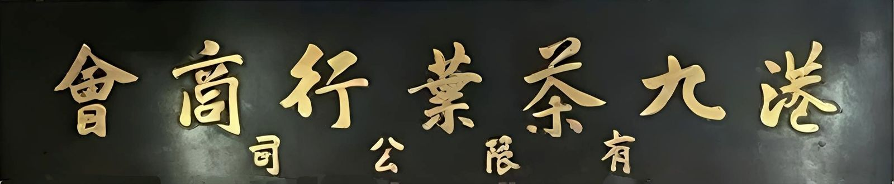
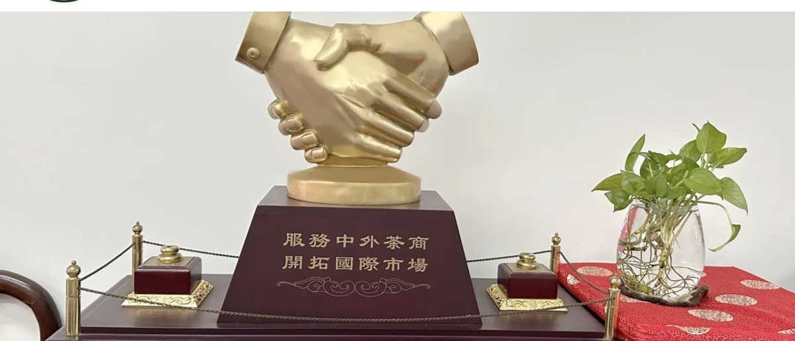
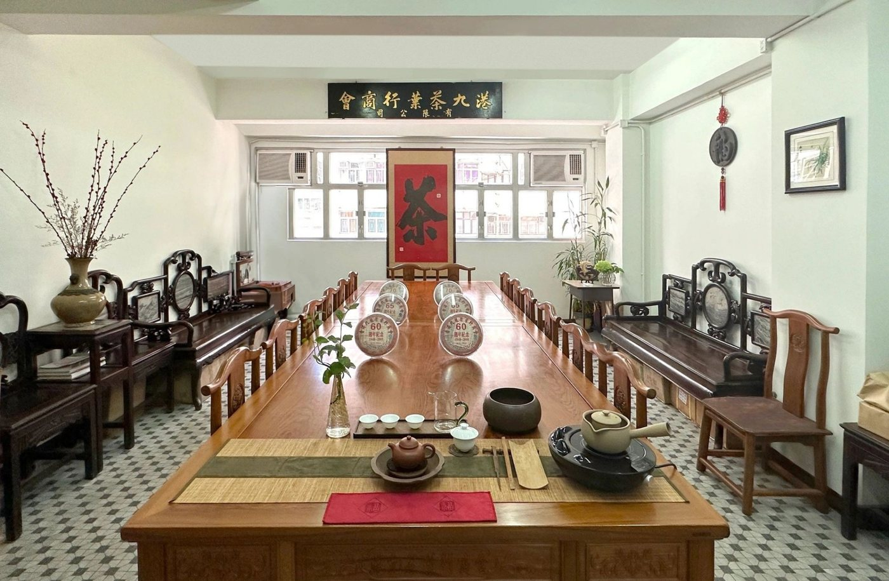
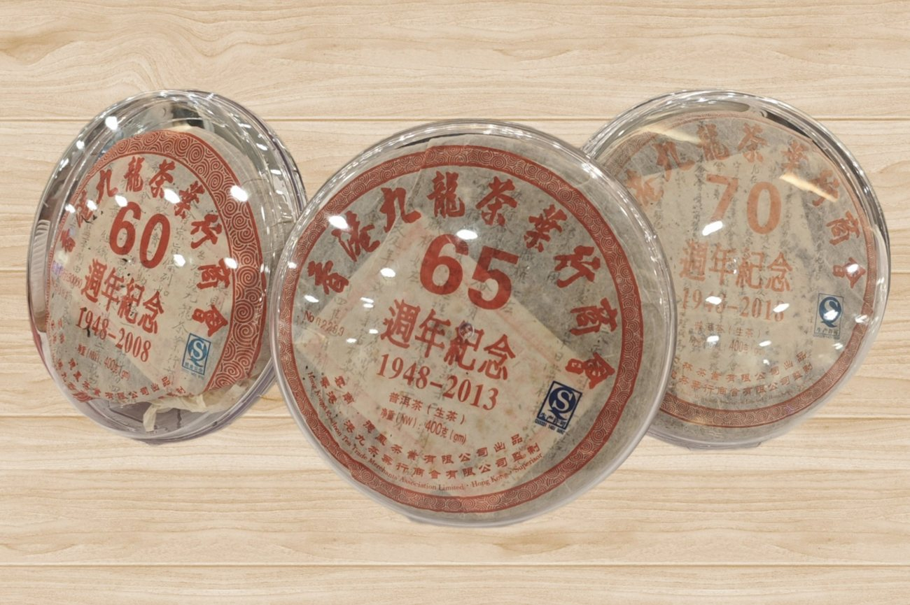
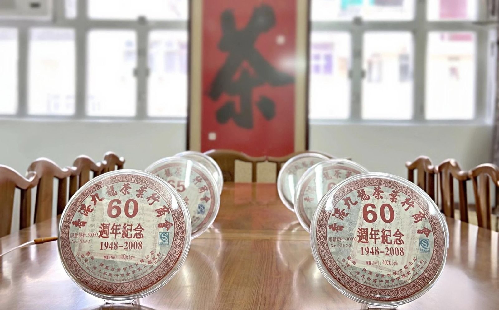
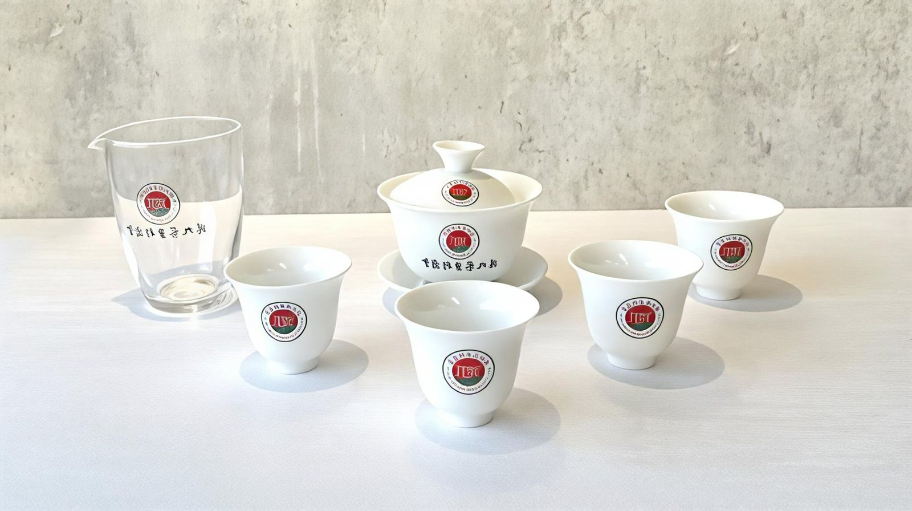
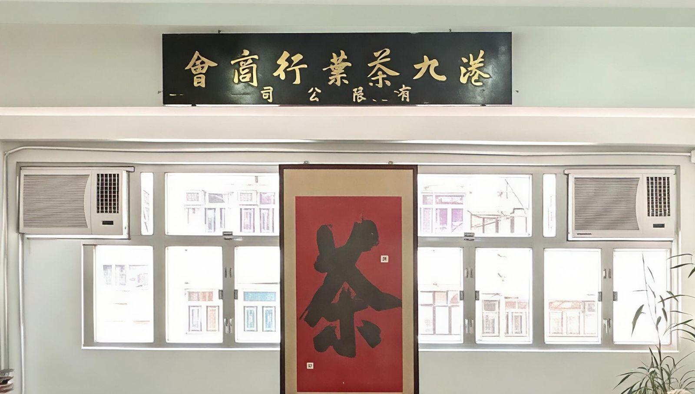
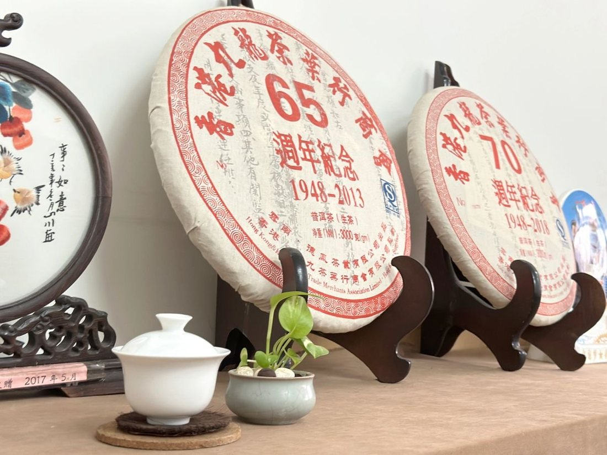

港九茶葉行商會
Hong Kong & Kowloon Tea Trade Merchants Association
1946 籌組 · 1948 正式成立
Hong Kong & Kowloon Tea Trade Merchants Association
1946 籌組 · 1948 正式成立
宗旨與使命 · 籌組與成立 · 現屆理監事 · 聯絡

港九茶葉行商會於 1946 年籌組、1948 年正式成立，是香港歷史上首個茶行業商會。會員涵蓋眾多著名茶葉商號及老字號企業。本會的核心宗旨是向世界推廣中國茶文化。
自成立以來，本會與相關機構及茶葉行業保持緊密聯繫，定期舉辦晚宴、行業交流會及參加大型展覽，致力搭建茶葉貿易與文化交流的平台，促進業內交流，提升專業人士的素質。

來源：商會官網《宗旨與使命》
來源：商會官網《宗旨與使命》原文
本會的誕生有兩個年份並記：1946 年籌組——黃笛舫先生多年奔走，凝聚香港茶葉商行的力量；1948 年正式成立，定名「香港九龍茶葉行商會」，由黃笛舫先生出任首任理事長，梁奕韶先生、吳南針先生出任副理事長，當時會址位於港島皇后大道中 155 號 2 樓。
1982 年，本會註冊為港九茶葉行商會有限公司。全盛時期會員數目佔全港茶葉商九成以上，為香港茶葉界的代表團體。
來源：商會官網《本會歷史》；1946 年籌組之說見公開簡介資料
來源：商會官網會員名冊（2026–2027 版本）
會址：香港德輔道西 196 號 3 樓 A 座
電話：(852) 2547 3306
官網：www.hkkttma.org





